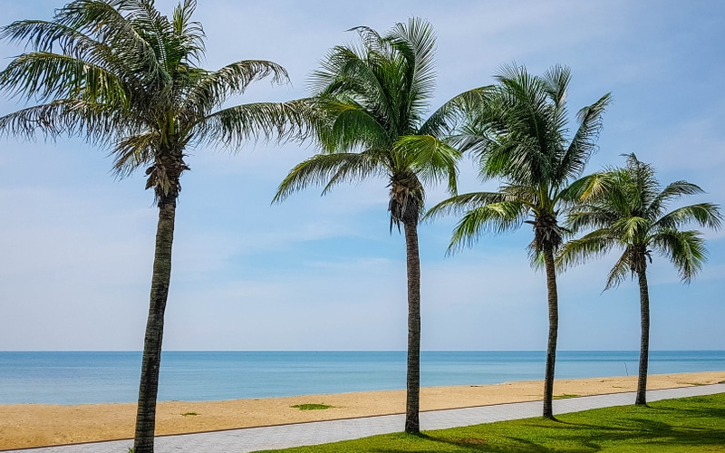

ชายหาดยาวสงบ • ต่อเนื่องจากหาดสมิหลา
หาดชลาทัศน์ เป็นชายหาดที่ยาวต่อเนื่องมาจากหาดสมิหลา โดยมีแหลมสมิหลาเป็นจุดแบ่ง มีหาดทรายขาวสะอาด เล่นน้ำได้ตลอดแนว ลักษณะของหาดค่อนข้างเป็นเส้นตรง และมีถนนชลาทัศน์ร่มรื่นด้วยทิวสนทะเลเลียบตลอดแนวหาด
หาดแห่งนี้เงียบสงบกว่าหาดสมิหลาเล็กน้อย จึงเหมาะสำหรับผู้ที่ต้องการพักผ่อนอย่างแท้จริง นั่งรับลมทะเล หรือจัดปิกนิกกับครอบครัว

ถนนเลียบหาดชลาทัศน์ร่มรื่นด้วยต้นสน ทำให้บรรยากาศเย็นสบายตลอดทั้งวัน เหมาะกับทั้งชาวท้องถิ่นและนักท่องเที่ยวที่อยากหลีกหนีความวุ่นวาย
อยู่ถัดจากหาดสมิหลา สามารถขับรถต่อเนื่องไปตามถนนชลาทัศน์ได้โดยสะดวก มีที่จอดรถและพื้นที่พักผ่อนหลายจุดตลอดแนว
ที่ตั้ง:
ถนนชลาทัศน์ อ.เมือง จ.สงขลา
จุดเด่น:
หาดยาว • ทิวสนร่มรื่น • บรรยากาศสงบ
เหมาะสำหรับ:
พักผ่อน • ปิกนิก • เดินเล่น
แผนที่สามารถซูมและเลื่อนดูได้ตามต้องการ